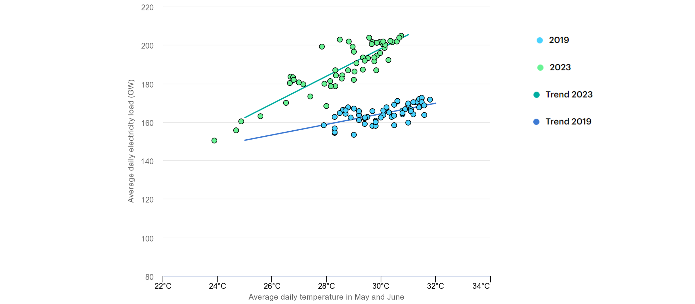
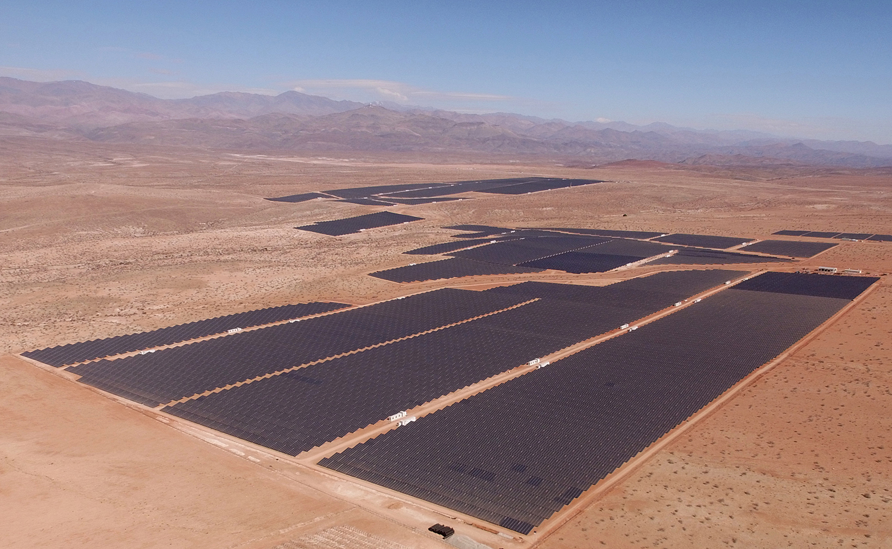
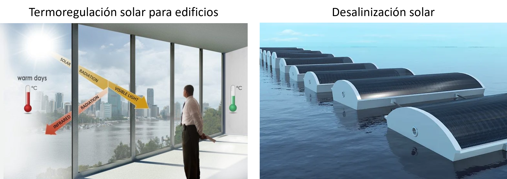
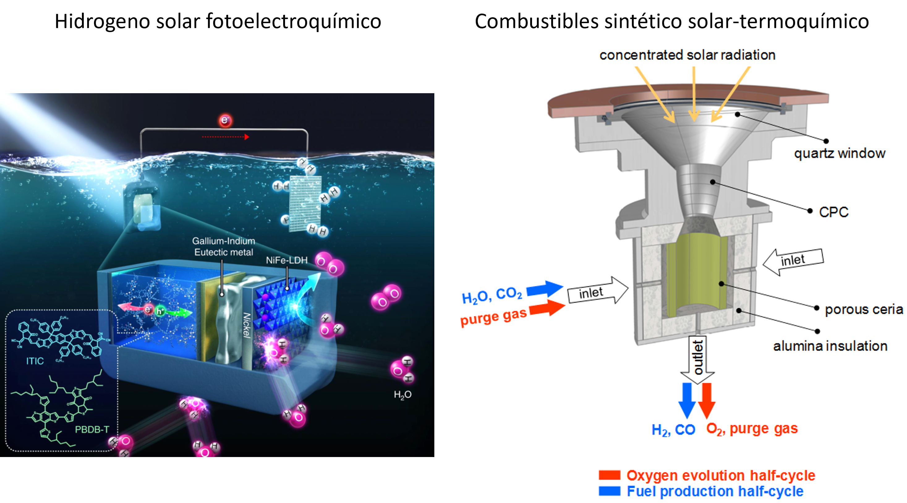
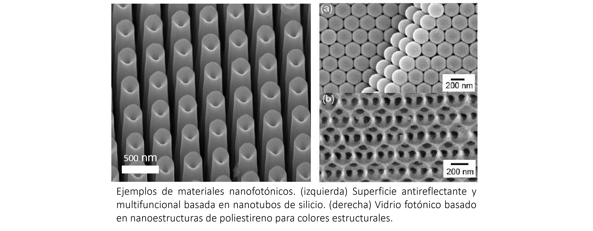

Introducción al curso#
Utilización del recurso solar#
El sol es la única fuente de energía externa disponible.

Si realizamos un balance de energía en la tierra tenemos que, necesariamente, toda la energía absorbida por el sol (\(\dot{E}_\mathrm{sun}\)) debe ser rechazada hacia el universo (\(\dot{E}_\mathrm{universe}\)). El efecto del cambio climático es, por consecuencia, el resultado de un desbalance ocasionado por la incapacidad de la tierra de disipar esta energía.
Cuando utilizamos una fuente de energía distinta a la solar estamos, entonces, utilizando parte de las reservas acumuladas. Reservas que también tienen su origen en la energía solar.
Situación actual del sistema energético#
Generación de energía#
Según el siguiente estudio de Our World in Data, la energía consumida según su fuente (incluyendo consumo domiciliario, industrial y transporte), la participación relativa de los combustibles fósiles es cada vez menor. Sin embargo, el consunmo neto sigue en aumento.
La tendencia no solo se observa en el consumo, sino que también en la generación de energía.
Los siguientes reportes de Generadoras de Chile) muestran la participación neta y relativa de las fuentes de energía en la generación.
Participación relativa en la generación
from IPython.display import display, HTML, IFrame
IFrame('https://docs.google.com/spreadsheets/d/e/2PACX-1vSupsaku1SZ9F-OqbhRnZQ7FFAZ4yDnj2FGe8ACY00UCOXgga5PA5Z5Z2Y_wXH-EkLEkcAHTNXmgelW/pubchart?oid=1101314265&format=interactive', '100%', '450px')
Participación neta en la generación (GWh)
from IPython.display import display, HTML, IFrame
IFrame('https://docs.google.com/spreadsheets/d/e/2PACX-1vSupsaku1SZ9F-OqbhRnZQ7FFAZ4yDnj2FGe8ACY00UCOXgga5PA5Z5Z2Y_wXH-EkLEkcAHTNXmgelW/pubchart?oid=1025565804&format=interactive', '100%', '450px')
Consumo de reservas#
Como revisabamos en la sección anterior, seguimos utilizando gran parte de las reservas disponibles. Esto, según la Global Footprint Network, a una tasa mayor que nuestra capacidad para regenerarlas. Por ejemplo, las reservas regeneradas proyectadas para el 2023 se agotaron el 2 de agosto. Esta fecha, denominada Día de Sobrecarga de la Tierra o Earth overshoot day se adelanta cada año, producto del aumento en la emisión de gases de efecto invernadero.
from IPython.display import display, HTML, IFrame
IFrame('https://data.footprintnetwork.org/#/', '100%', '600px')
Manejo de ganancias y pérdidas energéticas#
Por otro lado, el uso de esta energía es muy ineficiente, principalmente en los sistemas de enfriamiento y calefacción. Según la international energy agency, el consumo de energía para enfriamiento de espacios representa un 10% del consumo global, y puede alcanzar hasta el 50% durante el verano en regiones con temperaturas altas.
Consumo eléctrico diario en acondicionamiento de aire versus temperatura en India (mayo y junio, 2019 y 2023)
{kind=link}
En sintesis, podemos deducir que el desarrollo sustentable en la tierra dependerá de nuestra capacidad de:
Generar energía directa del sol y otras fuentes renovables
Generar reservas con fuentes limpias
Manejar el balance entre las ganancias (\(\dot{E}_\mathrm{sun}\)) y pérdidas (\(\dot{E}_\mathrm{universe}\)) de energía radiativa.
Tecnologías de manejo y conversión de energía solar#
El recurso solar en Chile y el mundo#
Chile es el país con mayores niveles de radiación en el mundo. Por ejemplo, en base al atlas solar del World Bank Group, si calculamos la energía generada por el área con mayores niveles de radiación considerando paneles con potencia máxima de 500 Wp
A = 221176.04 # Superficie total de el norte grande (km^2)
Pmax = 0.500 # Potencia máxima por panel en condiciones estándard (kWp)
A_pv = 2 # superficie ocupada por panel (m^2)
PVOUT = 6.0 # Potencía específica suministrada (kWh/kWp)
# Energía total suministrada (TWh)
Etot = A*1E3**2*PVOUT*Pmax/A_pv/1E9
print("Energía eléctrica suministrada:\t\t%.1f TWh" % Etot)
print("Energía total consumida en Chile:\t504.1 TWh")
print("Energía eléctrica consumida en Chile:\t78.4 TWh")
Energía eléctrica suministrada: 331.8 TWh
Energía total consumida en Chile: 504.1 TWh
Energía eléctrica consumida en Chile: 78.4 TWh
Tecnologías actuales#
Las principales tecnologías de convsersión de energía solar hoy en día son la fotovoltaica y termosolar. En Chile, la capacidad instalada total es de 4.6 GW. Con excepción de la planta termosolar Cerro Dominador, el suministro esta basado en plantas solares fotovoltaicas.
{kind=link}
{kind=link}
Estado del arte de las tecnologías actuales#
Las actuales tecnologias basadas en energía solar (principalmente fotovoltaica y termosolar) presentan una serie de deseventajas, tales como:
Baja eficiencia. Hoy en día la eficiencia de una planta fotovoltaica esta entre un 15% - 20%. En el caso de una central termosolar, la eficiencia es menor al 20%.
Almacenamiento de energía limitado. Esto aplica particularmente a centrales fotovoltaicas. Si bien, las centrales termosolares pueden almacenar energía hasta por 24 horas, el costo nivelado de esta energía es superior a la energía por combustibles fósiles. Similar con el costo de almacenamiento por hidrógeno.
Limitada capacidad de reutilización. Los paneles fotovoltaicos, la principal tecnología de conversión solar, tienen una vida útil promedio de 25 años. Luego de esto, la recuperación de los componentes es aún compleja y costosa.
Manejo ineficiente de la energía. En hogares y oficinas, el control de las ganancias y pérdidas de calor por radiación es aún deficiente.(El consumo de aire acondicionado en edificios representa el 20% del consumo total)
Tecnologías emergentes#
La investigación en tecnologías de conversión y manejo del recurso solar ha avanzado en diversas direcciones. Algunos ejemplos relevantes son:
 {kind=link}
{kind=link}
Nanotecnología para el control de la radiación#
El control de la radiación solar es clave en aspectos, tales como, mejorar la captura de energía solar, mejorar la eficiencia de conversión, o reducir el consumo de energía para enfriamiento y calefacción
Para modificar la respuesta óptica de un material, es necesario el diseño de estructuras a escalas relativas a la longitud de onda de la luz. Esto significa diseñar estructuras que van desde la escala de micrómetros a cientos de nanómetros.

Trabajar a estas escalas pareciera algo extremadamente sofisticado. Sin embargo, hoy en día es común encontrar nanoestructuras en dispositivos electrónicos, productos cosméticos, entre otros.

La manufactura en nanomateriales ha avanzado significativamente en las últimas décadas, reduciendo costos y permitiendo escalar la producción a escalas industriales. Esto ha impactado en la investigación en nanofotónica, facilitando el rediseño de materiales para optimizar su interacción con la luz
{kind=link}
El objetivo central de este curso es entender cómo estas estructuras modifican la respuesta óptica de los materiales, y cómo utilizar estos fenómenos en aplicaciones reales.